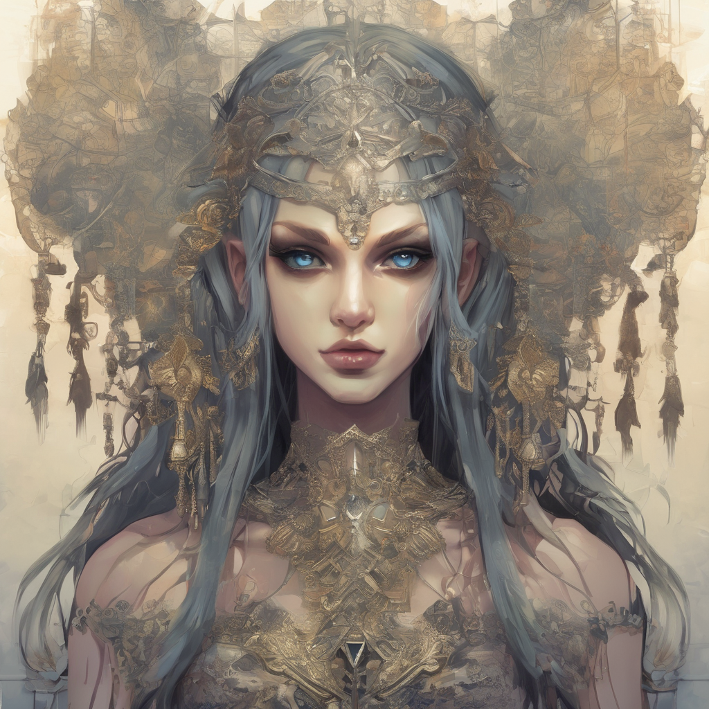
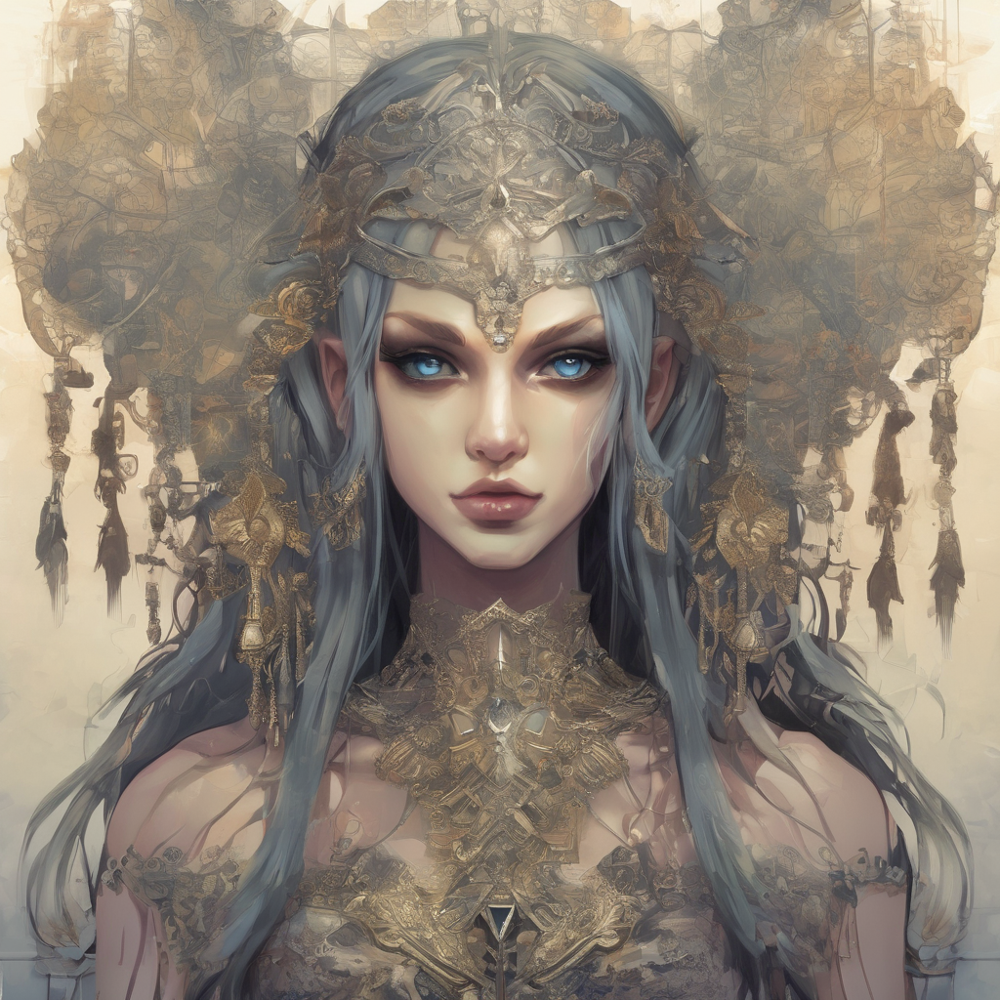

In the heart of Emerald Hollow, where dandelions whispered secrets and mushrooms held council, our trio embarked on their otherworldly journey. The portal shimmered like a soap bubble, and Seraphina, Archibald, and Evie stepped through, their fates entwined like ivy on an ancient oak. As they crossed the threshold, the toadstools lining the path sprouted tiny mouths. “Greetings, travelers!” they chorused. “Would you like directions or a limerick?” Seraphina raised an eyebrow. “Limerick, please.” The toadstools giggled: In Emerald Hollow, so green and bright, Three heroes stepped into realms of light. With courage, wit, and caution in tow, They danced with destiny, to and fro. High in the ancient oaks, squirrels chattered. “To reach Aetherrealm,” they said, “you must solve our riddles.” Archibald scratched his head. “Fine. Hit us.” The squirrels posed their riddle: What has keys but can’t open locks? What has space but no room for socks? What has leaves but never a tree? What am I? Evie grinned. “A piano!” The squirrels clapped their tiny paws. “Correct! Onward!” Aetherrealm’s sky was a canvas of shifting hues. The clouds, sentient and ticklish, swirled around the trio. “Tickle us,” they giggled, “and we’ll reveal secrets.” Seraphina hesitated. “Secrets?” Archibald leaned in and tickled a cloud. It whispered: The Scepter of Eternity lies atop Nimbus Spire. But beware the Sky Serpents—they adore riddles. Evie snorted. “Sky Serpents with riddles? What’s next, flying hedgehogs?” The Peculiar River of Rhymes: Beyond the ticklish clouds, they encountered the River Rhymus, where water flowed in poetic couplets. Each ripple sang a sonnet, and the fish pirouetted to iambic pentameter. Seraphina dipped her hand. “What’s the catch?” The river replied: To cross, speak in rhyme, or be swept away, For here, words waltz, and prose holds sway. And so, our trio rhymed their way across: Archibald: "Ode to the Moon, silver and pale, Guide us, dear Luna, through this watery trail." Evie: "By the quill’s ink, and the potion’s brew, River Rhymus, we seek the Scepter true." Seraphina: "With sword in hand, and courage ablaze, We’ll verse our way to Nimbus Spire’s maze." The river applauded, and they continued, soaked but triumphant. The Giggling Gargoyles: At the edge of the river, stone gargoyles perched. Their laughter echoed through the mist. “Answer our riddles,” they chortled, “or remain petrified!” Seraphina squared her shoulders. “Try us.” The first gargoyle grinned: What flies without wings, And sings without voice? Archibald whispered, “Time.” The second gargoyle frowned: What has keys but no locks, And space but no room? Evie smirked. “A typewriter.” The third gargoyle huffed: What has leaves but no branches, And never a tree to call home? Seraphina winked. “A book.” The gargoyles clapped, and the path ahead cleared. The Scepter awaited, and their laughter echoed across realms.
 
